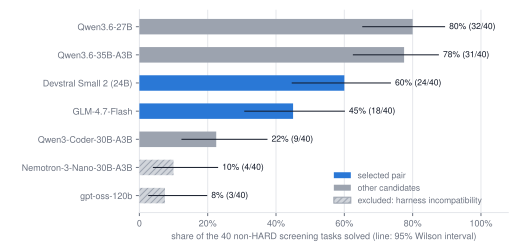
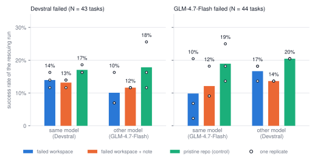
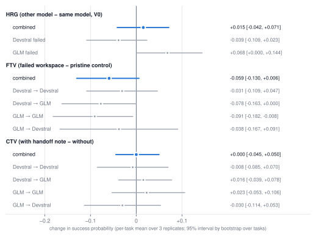
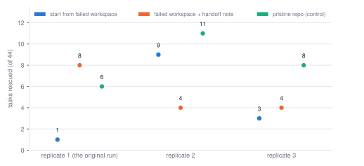

Does a Failed Agent’s Workspace Help the Next One? A Controlled Pilot on Failure-Conditioned Recovery Between Coding Agents
Ph.D. student, Data Science, William & Mary · dyang06@wm.edu
October 4, 2026 · exploratory pilot, not peer reviewed
Abstract
When a coding agent fails on a repository task, a common design hands the task to another agent — sometimes a different model —
on the assumption that diversity helps and that the failed attempt is a useful starting point. We test both assumptions in a
controlled pilot on SWE-bench Pro V2. The agent harness is held fixed (mini-SWE-agent with a single bash tool)
and only the model varies. For each task on which a primary agent fails, the exact container filesystem it leaves behind is
archived and fresh agents are started from byte-identical restores: the same model, a different model and, as a control,
the different model on the pristine repository. This splits the benefit of switching models into a
capability/complementarity term and a failed-state term. With two matched open-weight models (Devstral Small 2 and
GLM-4.7-Flash; 60 tasks, 87 failed workspaces, three replicates of 448 rescue and control runs each) we detect no benefit from
switching models (HRG +0.015, 95% CI [−0.042, +0.071]), no benefit from the failed workspace (FTV −0.059, [−0.130, +0.006]), and no
benefit from a self-written handoff note (CTV 0.000, [−0.045, +0.050]). With an unmatched pair, an apparent gain from switching
models (+0.26) was explained by the stronger model alone, and an effect that was nominally significant in the first run
(exact p = 0.016) reversed in the second replicate. The study is small, exploratory and limited to mid-sized open-weight models and one
harness. We release the framework, protocol and data, and we invite collaboration at larger scale.
1 Introduction
A common way to handle a failed agent run is escalation: a run that fails, stalls or is rejected by a verifier is retried by a fresh agent, sometimes a different model or a different product. Two intuitions underlie this practice. The first is complementarity: models fail on different tasks, so a second, different model should rescue some of the first one’s failures. The second is reuse of partial work: the repository the first agent left behind contains edits, scripts and diagnoses that a successor can build on. Both intuitions can be wrong. A second model may simply be a stronger model, in which case the gain says nothing about complementarity; and a failed attempt can anchor its successor on a wrong hypothesis, leaving it worse off than a clean start.
This pilot asks a deliberately narrow question under controlled conditions:
When one repository-level coding agent fails, is a fresh heterogeneous agent better at recovering the failed workspace than a fresh instance of the same agent — and is the failed workspace itself an asset or a liability?
“Heterogeneous” here means a different model family and vendor behind the same harness, prompts, tools, budget and environment, so that the model is the only thing that changes. The quantity of interest is not ordinary task success but the conditional success of the rescuer given the primary’s failure and the actual state it left behind.
Contributions.
- A protocol that separates three effects — switching models (HRG), starting from the failed workspace rather than from scratch (FTV), and handing over a written note (CTV) — by pairing every rescue with a same-model rescue and a pristine-repository control on byte-identical start states (Section 3).
- An open, auditable framework that archives and restores the exact failed filesystem, isolates every branch, grades with the unchanged official verifier on a pristine image, never counts infrastructure faults as agent failures, and logs every deviation (Section 4; code and data).
- Empirical results, including null results and a failed replication: with matched models, switching gives no detectable gain and the failed workspace gives none either (Section 5), plus methodological lessons for evaluating agents (Sections 6 and 8).
2 Related work
Benchmarks and harnesses. SWE-bench [1] evaluates language models on resolving real GitHub issues; SWE-Bench Pro [2] is a harder, longer-horizon benchmark; we use the validated V2 release of its public split (642 tasks from 11 repositories, with a 51-task HARD subset). SWE-agent [3] introduced custom agent–computer interfaces for automated software engineering; mini-SWE-agent [10] is a deliberately minimal harness in which the model’s only tool is a shell, which we use. Agentless [4] asks whether complex autonomous agents are necessary at all, a reminder that scaffold choices and model choices are entangled — a point we return to when two candidate models proved incompatible with our harness (Section 5.3).
Learning from a failed attempt. Reflexion [5] lets an agent reflect verbally on feedback from a failed trial and keep that text in memory for the next trial. Huang et al. [6] report that language models struggle to self-correct reasoning without external feedback and can even get worse. Our same-model rescue and our handoff-note condition probe a loosely related question in a software setting, where the environment itself carries the failed attempt’s state and the verifier’s hidden tests provide an external check only at the end.
Multiple agents. Mixture-of-Agents [7] composes several models in layers, each conditioning on the previous layer’s outputs. Cemri et al. [8] catalogue why multi-agent LLM systems fail and note that their benchmark gains are often small. We study a narrower mechanism than either: the hand-off of an environment state at a failure boundary, with an explicit pristine-start control, so that “the second agent was better” can be separated from “the first agent’s leftovers helped”.
3 Problem setting and metrics
Let A and B be models run inside the same harness. A task is a primary failure of A if a run of A from the pristine repository Repo0 ends (for any reason) and the official evaluator marks the final state unsolved. Let RepotA be the complete filesystem state A left behind. For each such task we start fresh agents — with no access to A’s conversation — from independent restores of that state:
- V0 rescue by B (B = A or another model): the original task statement preceded by a fixed notice: “A previous coding agent attempted this task but did not solve it. Independently inspect the current repository state and complete the original task. Existing modifications may be correct, partially correct, or incorrect. You may keep, modify, or revert them. Do not assume the previous agent’s approach or hypotheses were correct. Run the relevant tests and make whatever repository changes are necessary.”
- Note rescue: as V0, plus a short handoff note written by A itself (one tool-free request to A’s model, shown its own full conversation; at most 400 words; no reasoning content is passed on) and presented as a hint to be checked, not trusted.
- Pristine control: B on Repo0 with the ordinary task prompt, with the same budget as a rescue.
Writing RA→B for the success probability of the V0 rescue, RnoteA→B for the note rescue and CB for the pristine control on A’s failure set:
FTVA→B = RA→B − CB (failure-state transfer value)
CTVA→B = RnoteA→B − RA→B (context transfer value)
Because RA→B = CB + FTVA→B, the gain from switching models decomposes exactly:
The first bracket is a capability/complementarity term — how much better B is than A on the tasks A failed, with no failed state involved. The second is a state term — whether B exploits A’s leftovers better than A exploits its own. A positive HRG is evidence for “diversity helps” only if the second bracket, or a first bracket that is not merely “B is stronger”, carries it. A negative FTV means the failed workspace is a liability relative to starting clean.
Estimation. The task is the unit of analysis. Per-task success is averaged over replicates, contrasts are averaged over tasks, and 95% intervals come from a bootstrap that resamples tasks (5,000 draws). “Pooled” estimates average the four rescue directions; they involve 50 distinct tasks, because a task can be in both models’ failure sets. Per direction we also report how many tasks have a positive or negative three-replicate mean difference, for orientation only. The analysis is exploratory and was not pre-registered.
4 Experimental framework
- Benchmark. SWE-bench Pro V2, release v2.0.0 (pinned commit; task and checksum verification at start-up). A task is eligible only if, under our runtime, the official gold patch is graded solved and an empty patch unsolved (an outcome-blind gate run before any model is evaluated).
- Harness. mini-SWE-agent 2.4.6 with the official V2 prompt templates, unmodified (only the provider-specific
reasoning_effortsetting is dropped); a singlebashtool; 30-minute wall clock, 250 steps, 60 s per command, 131k-token context, four concurrent agents per model endpoint. Models are served with vLLM 0.31.0 behind an OpenAI-compatible endpoint, one 80 GB H100 per model, at each vendor’s recommended sampling settings (Appendix A). - Sandbox. One writable Apptainer container per branch, running as root with no network; the model is reached from the host. Branches share nothing.
- Exact checkpoints. At the end of a primary run the entire container filesystem is archived (
tar.zstplus a per-file SHA-256 manifest and tree hash), not just the repository diff, so untracked files, deletions, generated files and edits outside the repository are all preserved. Every rescue restores the archive into a fresh directory and verifies the tree hash; restoring twice and mutating one copy leaves the other unchanged (unit-tested). Processes are not part of the state. - Grading. The final diff relative to the pristine state is applied to a fresh pristine image and the unchanged official verifier is run there, never in the agent’s sandbox.
- Failures. Infrastructure faults (model endpoint, container, harness, evaluator) are classified separately from task failures, never counted as agent failures, and retried identically for all models. Every attempt is kept.
- Auditability. A run manifest fingerprints the science-relevant configuration and refuses to resume under a different one; protocol changes are systematically tracked and dated.
5 Experiments and results
5.1 Phase 0: an unmatched pair and a floor effect
We started with Qwen3-Coder-30B-A3B and Devstral Small 2 on 10 HARD and 10 non-HARD tasks. Neither model solved a HARD task (0/10 each); on non-HARD tasks Qwen solved 0/10 and Devstral 4/10. All 40 runs ended because the agent submitted; none exhausted the budget. Under our original failure definition (“budget exhausted and unsolved”) the recovery set would have been empty. We therefore redefined a primary failure as “the run ended and the evaluator marks it unsolved” (a confident wrong submission is exactly the failed state of interest), moved the main experiments to non-HARD tasks, and recorded both changes before running any recovery branch.
5.2 An unmatched pair: switching looks useful, but it is the stronger model
On 40 non-HARD tasks, Qwen3-Coder solved 9 and Devstral 24; the tasks Qwen solved were a strict subset of Devstral’s (0 solved by Qwen only, 15 by Devstral only). Rescue results are in Table 1.
| failed agent | same model, from failed workspace | other model, from failed workspace | other model, from pristine repo |
|---|---|---|---|
| Qwen3-Coder failed (N = 31) | 3/31 | 11/31 | 12/31 |
| Devstral failed (N = 16) | 1/16 | 0/16 | 0/16 |
Table 1. Successes out of failed tasks in pilot v1 (single run per cell).
Handing Qwen’s failures to Devstral rescued 11/31 against 3/31 for Qwen itself (HRG +0.26). Taken alone this looks like a strong case for heterogeneous rescue. But Devstral restarting from a pristine repository solved 12/31 of the same tasks, more than the 11 it solved from Qwen’s workspace (FTV = −0.03). A same-model pristine control for Qwen (Qwen from scratch on its own failures: 2/31) was added in a follow-up experiment and gives the exact decomposition HRG = +0.26 = +0.32 (capability: CDevstral − CQwen) + (−0.06) (failed-state term). The gain is more than accounted for by the capability gap; the failed-state term is slightly negative. In the other direction Qwen rescued 0/16 of Devstral’s failures from either start state — a floor effect. Without the pristine control these numbers would have been read as evidence for heterogeneous rescue.
5.3 Choosing a matched pair
To test complementarity rather than strength, we screened five further open-weight models on the same 40 tasks (single primary run each, same harness and settings). Results are in Table 2 and Figure 1.
| model | notes | solved | rate | 95% Wilson CI (%) |
|---|---|---|---|---|
| Qwen3.6-27B | dense, FP8, reasoning | 32/40 | 80% | [65, 90] |
| Qwen3.6-35B-A3B | MoE (≈3B active), FP8, reasoning | 31/40 | 78% | [62, 88] |
| Devstral Small 2 | dense 24B, FP8 | 24/40 | 60% | [45, 74] |
| GLM-4.7-Flash | MoE, BF16, reasoning | 18/40 | 45% | [31, 60] |
| Qwen3-Coder-30B-A3B | MoE (≈3B active), FP8 | 9/40 | 22% | [12, 38] |
| Nemotron-3-Nano-30B-A3B | excluded: 23 of 40 runs ended on repeated calls to a tool the harness does not provide | 4/40 | 10% | [4, 23] |
| gpt-oss-120b | excluded: all 40 runs ended on malformed tool-call JSON | 3/40 | 8% | [3, 20] |
Table 2. Screening on 40 non-HARD tasks; the two selected models are shaded. Qwen3-Coder is from pilot v1.

str_replace_editor) that this harness does not offer, and gpt-oss-120b repeatedly produced invalid JSON in its tool-call arguments (typically when writing long multi-line patch-style commands), exhausting the consecutive-format-error limit in every run. Because the harness is held fixed, the study partly measures how well a model adapts to an unfamiliar scaffold.Pairs of interest are compared in Table 3. Qwen3.6-35B and Qwen3.6-27B are nearly identical in strength but come from one family and leave few failures; Devstral and GLM-4.7-Flash come from different vendors, differ by 15 points on the screening tasks, and each solves tasks the other does not (Devstral-only 8, GLM-only 2). We chose this pair.
| pair (A vs B) | both solve | only A | only B | neither | exact McNemar p | |
|---|---|---|---|---|---|---|
| Devstral Small 2 vs GLM-4.7-Flash | selected | 16 | 8 | 2 | 14 | 0.109 |
| Qwen3.6-35B-A3B vs Qwen3.6-27B | same family | 27 | 4 | 5 | 4 | 1.000 |
| Devstral Small 2 vs Qwen3.6-35B-A3B | 23 | 1 | 8 | 8 | 0.039 | |
| Qwen3-Coder-30B-A3B vs Devstral Small 2 | first pair (pilot v1) | 9 | 0 | 15 | 16 | <0.001 |
Table 3. Paired outcomes on the 40 screening tasks.
A caveat on selection. The pair was chosen after seeing single-run results on tasks that overlap with the main experiment’s non-HARD tasks. All primary runs of the main experiment were re-run from scratch, and the realised gap shrank (Devstral 17/40, GLM 15/40 on non-HARD tasks) — consistent with a selection made on noisy single runs. Devstral’s solve count on the same 40 tasks fell from 24 to 17 between two independent runs (discordant tasks 9 vs 2, exact p = 0.065); GLM’s went from 18 to 15.
5.4 Main experiment: Devstral Small 2 and GLM-4.7-Flash
Setup. 60 tasks: the 40 non-HARD tasks plus the first 20 gated HARD tasks in a seeded order. Primary runs: Devstral 17/60 (17/40 non-HARD, 0/20 HARD), GLM-4.7-Flash 16/60 (15/40, 1/20). The two models agree on 47 of 60 tasks and disagree on 13 (7 Devstral-only, 6 GLM-only), so the failure sets (Devstral 43, GLM 44 tasks) overlap partly. 111 of the 120 primary runs ended by submitting. For every primary failure we ran six conditions — V0 rescue, note rescue and pristine control, each by the same and by the other model — and repeated all 448 resulting runs three times (the original run and two replicates) on identical archived workspaces and identical notes, so that only the rescuer’s sampling varies.
| rescuer | failed workspace (V0) | failed workspace + handoff note | pristine repo (control) |
|---|---|---|---|
| Devstral failed — N = 43 tasks | |||
| same model: Devstral | 14.0% (18/129) | 13.2% (17/129) | 17.1% (22/129) |
| other model: GLM-4.7-Flash | 10.1% (13/129) | 11.6% (15/129) | 17.8% (23/129) |
| GLM-4.7-Flash failed — N = 44 tasks | |||
| same model: GLM-4.7-Flash | 9.8% (13/132) | 12.1% (16/132) | 18.9% (25/132) |
| other model: Devstral | 16.7% (22/132) | 13.6% (18/132) | 20.5% (27/132) |
Table 4. Pooled success of the rescuing run over three replicates (rate and successes/runs; per-replicate counts are in the data table below Figure 2). A pristine control is one run per task, model and replicate, and is reused in every failure set that contains the task.

Show the data behind Figure 2
| failure set | condition | pooled rate | replicates 1 / 2 / 3 |
|---|---|---|---|
| Devstral failed | V0: devstral → devstral | 14.0% | 7/43 / 6/43 / 5/43 |
| Devstral failed | note: devstral → devstral | 13.2% | 6/43 / 5/43 / 6/43 |
| Devstral failed | pristine control: devstral | 17.1% | 7/43 / 8/43 / 7/43 |
| Devstral failed | V0: devstral → glm47flash | 10.1% | 3/43 / 3/43 / 7/43 |
| Devstral failed | note: devstral → glm47flash | 11.6% | 5/43 / 5/43 / 5/43 |
| Devstral failed | pristine control: glm47flash | 17.8% | 5/43 / 11/43 / 7/43 |
| GLM-4.7-Flash failed | V0: glm47flash → devstral | 16.7% | 8/44 / 6/44 / 8/44 |
| GLM-4.7-Flash failed | note: glm47flash → devstral | 13.6% | 6/44 / 6/44 / 6/44 |
| GLM-4.7-Flash failed | pristine control: devstral | 20.5% | 9/44 / 9/44 / 9/44 |
| GLM-4.7-Flash failed | V0: glm47flash → glm47flash | 9.8% | 1/44 / 9/44 / 3/44 |
| GLM-4.7-Flash failed | note: glm47flash → glm47flash | 12.1% | 8/44 / 4/44 / 4/44 |
| GLM-4.7-Flash failed | pristine control: glm47flash | 18.9% | 6/44 / 11/44 / 8/44 |
Contrasts. Figure 3 and Table 5 give the three effects, pooled and per direction.

| contrast | estimate | 95% interval | tasks | tasks + / − |
|---|---|---|---|---|
| HRG, both directions pooled (V0) | +0.015 | [−0.042, +0.071] | 50 | – |
| HRG, both directions pooled (+note) | 0.000 | [−0.041, +0.041] | 50 | – |
| FTV, all four rescue directions pooled | −0.059 | [−0.130, +0.006] | 50 | – |
| CTV, all four rescue directions pooled | 0.000 | [−0.045, +0.050] | 50 | – |
| per failure direction | ||||
| HRG, Devstral failed (V0): GLM − Devstral | −0.039 | [−0.109, +0.023] | 43 | 5 / 8 |
| HRG, GLM failed (V0): Devstral − GLM | +0.068 | [0.000, +0.144] | 44 | 9 / 4 |
| HRG, Devstral failed (+note) | −0.016 | [−0.093, +0.062] | 43 | 5 / 5 |
| HRG, GLM failed (+note) | +0.015 | [−0.030, +0.061] | 44 | 6 / 4 |
| FTV, Devstral → Devstral | −0.031 | [−0.109, +0.047] | 43 | 6 / 8 |
| FTV, Devstral → GLM | −0.078 | [−0.163, 0.000] | 43 | 5 / 9 |
| FTV, GLM → GLM | −0.091 | [−0.182, −0.008] | 44 | 6 / 11 |
| FTV, GLM → Devstral | −0.038 | [−0.167, +0.091] | 44 | 7 / 10 |
| CTV, Devstral → Devstral | −0.008 | [−0.085, +0.070] | 43 | 5 / 6 |
| CTV, Devstral → GLM | +0.016 | [−0.039, +0.078] | 43 | 6 / 5 |
| CTV, GLM → GLM | +0.023 | [−0.053, +0.106] | 44 | 6 / 7 |
| CTV, GLM → Devstral | −0.030 | [−0.114, +0.053] | 44 | 5 / 8 |
Table 5. Estimates behind Figure 3 (V0 unless stated). “Tasks + / −” counts tasks whose three-replicate mean difference is positive / negative.
- Switching models (HRG). +0.015 [−0.042, +0.071] for V0 and 0.000 [−0.041, +0.041] with notes — no detectable effect, in either direction of failure (−0.039 when Devstral failed, +0.068 when GLM failed). The capability term of the decomposition is also close to zero: on Devstral’s failures GLM’s pristine success exceeds Devstral’s by 0.8 points, on GLM’s failures Devstral’s exceeds GLM’s by 1.5. With matched models, the models are about equally likely to solve what the other failed.
- The failed workspace (FTV). Pooled −0.059 [−0.130, +0.006] (−0.087 [−0.209, +0.028] on the non-HARD stratum alone). All four per-direction estimates are negative (−0.031, −0.078, −0.091, −0.038), and none of the twelve direction-by-replicate estimates is positive (two are exactly zero). The pooled interval, however, just reaches zero, and the only direction whose interval lies clearly below zero (GLM → GLM, −0.091 [−0.182, −0.008]) is one of many looks at the data. We read this as: no evidence that the failed workspace helps, and suggestive but not established evidence that it hurts slightly.
- Handoff notes (CTV). 0.000 [−0.045, +0.050]: a note written by the failed agent did not help the same model or the other one.
- HARD tasks. Rescue success on the 20 HARD tasks is at floor (about 2–8% in every condition; pooled rates in the repository’s
results/pilot_v2_pooled/hard/), so the pooled results are driven by non-HARD tasks.
5.5 A nominally significant effect that did not replicate
In the original run, GLM rescuing its own failures solved 1/44 from the failed workspace but 8/44 when given its own handoff note: of the tasks where the two conditions differed, 7 favoured the note and 0 the plain workspace (exact p = 0.016). It would have been a tempting headline: “a handoff note repairs the damage of a failed workspace”. In the second replicate the direction reversed (3 for the note, 8 against; p = 0.23) and in the third it vanished (3 vs 2). The three replicates solved 1, 9 and 3 of 44 tasks from the failed workspace on identical inputs (Figure 4).

Sampling at non-zero temperature over trajectories of roughly 80 tool calls makes single outcomes highly variable, even with the model, task and start state fixed. Any comparison of agent conditions at this scale from one run per cell is at risk of reporting noise as an effect.
6 Discussion
What the results do and do not say. Within this setting — two matched mid-sized open-weight models, a one-tool harness, SWE-bench Pro tasks — a second, different model recovered failed workspaces no better than the first model would have, and the failed workspace did not help either. The most economical reading is that, for models of similar strength, a task’s failure is dominated by factors shared across models (task difficulty) plus run-to-run randomness: a rescue is largely another sample, and success rates of 10–20% on tasks a model has just failed are what a fresh sample would give. The pristine control is exactly this retry-without-state baseline, and none of the rescue conditions beats it.
Why might a failed workspace hurt? Plausible mechanisms are anchoring on the earlier agent’s hypothesis, spending budget on understanding and testing someone else’s edits, and mistaking plausible-looking partial work for a solution. Descriptively, rescuers in the pooled data end with larger changes than control runs (median 20 KB vs 14 KB of diff; five vs four edited files) at similar step counts (median 79 vs 84), but this is largely by construction — they inherit the earlier edits — and says nothing about harm. These mechanisms are untested hypotheses; the trajectories are the natural data for testing them.
The handoff note. One cannot conclude that written handoffs are useless. Ours were single self-written summaries produced with one generic prompt by models of modest strength, and the receiving agent was told to treat them as hints. Stronger summarisation, structured diagnosis, or an advisor role for the second model (diagnose, then let the first one act) are different designs we did not test.
Harness compatibility is a confound. With the harness fixed, two of the five screened models failed mainly through tool-calling problems specific to this harness (Figure 1). “Model A vs model B” in a shared harness is also “how well each model’s training matches that harness”. Cross-harness studies are therefore not a luxury but a prerequisite for claims about models rather than model–harness pairs.
7 Limitations
- Scope. One benchmark, one harness with a single shell tool, two mid-sized open-weight models, one 30-minute / 250-step budget. No frontier models and no production agent products.
- Sample size. 43 and 44 failed tasks per direction; the pooled FTV interval spans about 0.14 and just reaches zero. Replicates reduce rescue-stage noise, not task-level sampling error.
- Failure type. Almost all primary failures are confident wrong submissions (111 of 120 primary runs ended by submitting; the others hit the step, context, format-error or time limit). Failures where an agent stalls, loops or is stopped mid-work are essentially absent, and may leave different workspaces.
- Prompt confound in FTV. A V0 rescue is told that a previous agent failed; the pristine control is not (the statement would be false). FTV therefore mixes the effect of the workspace with the effect of that sentence.
- Exploratory analysis. No pre-registration; many contrasts are shown; protocol changes followed observed results (Section 8). Intervals are not corrected for multiplicity, and single nominal p-values should not be read as evidence.
- Selection. The model pair was selected on single runs over overlapping tasks (Section 5.3). Primaries were re-run, but the pair’s “matched” property is partly a product of that selection.
- Possible leakage. Public benchmarks may overlap with model training data; we have not measured this.
8 Deviations, incidents and what they teach
During experimentation, deviations from the initial protocol and engineering incidents were systematically recorded. The ones that matter for interpretation are summarised in Table 6; none of the incidents changed a reported number except where stated, and all were applied uniformly across models.
| item | what happened | what we did |
|---|---|---|
| D-009 → D-021 | Primary failure was defined as “budget exhausted and unsolved”. In phase 0 no run reached the budget (40 of 40 ended by submitting), so the recovery set would be empty. | Failure := the run ended (any reason) and the official evaluator marks it unsolved. |
| D-022, D-034 | HARD-51 tasks were at floor for the first pair (0 of 10 for both models). | pilot v1 used 40 non-HARD tasks; the main experiment restores 20 HARD tasks as a separately reported stratum. |
| D-020 | A BF16 30B model leaves too little KV cache on one 80 GB GPU. | Official FP8 checkpoints where the vendor publishes them; one GPU per model. |
| D-024 | One image ships untracked files inside the repository; a HEAD-relative diff would contain them and not re-apply. | The agent’s change is diffed against the tree of the pristine state (Repo_0), not against HEAD. |
| D-025 | A cgroup out-of-memory kill terminated one agent command. | Host-side SIGKILL is an infrastructure failure; the branch was re-run (1 run affected). |
| D-032 | A NUL byte in a model-written command raised an exception in our sandbox wrapper. | Exceptions during command execution become observations, as in the upstream harness; 4 attempts re-run. |
| D-033 | Package versions in both Python environments were altered by an outside process during the runs. | Both environments restored and locked; every job now refuses to start on drift. Running processes were unaffected. |
| D-026 / D-036 | Single runs proved noisy (Section 5.5). | Handoff-note and control conditions added; the rescue stage replicated twice on identical inputs. |
Table 6. Selected deviations and engineering incidents.
In total the project recorded about 2,110 agent runs (6.8 billion tokens) using roughly 115 H100 GPU-hours on a shared academic cluster — a modest budget, which is part of why we think the question is worth pursuing at larger scale.
9 Open questions and an invitation
This pilot leaves the interesting parts of the question open. If you have access to substantial agentic compute (for example Codex or Claude Code–class models and harnesses), the following would, in our view, be the most informative next steps:
- Stronger models and real harnesses. Repeat the design with frontier models and product harnesses (and cross them), to separate model effects from harness effects.
- More tasks and replicates. A few hundred non-HARD tasks would settle whether failed-workspace transfer is slightly negative (“failure debt”) or null; HARD tasks need stronger models to leave floor.
- Mechanisms. Trajectory-level analysis of rescue runs: anchoring, wasted steps, premature submission; what a rescuer reads and reverts.
- Other hand-off designs. Verified summaries, test-failure reports, advisor/executor splits, selective reset of the workspace, and learned routing.
- Other failure types. Stalls, timeouts and verifier rejections, not only confident wrong submissions.
If this topic — recovery, hand-off and cooperation between agents — interests you and you have the compute, I would be glad to explore it together. The framework is built so that a new model is one configuration entry and a new harness is one adapter. Write to dyang06@wm.edu or open an issue on the repository.
Reproducibility
Everything in this article is recomputed from results/data/branches.csv (one row per recorded agent run) by scripts/analyze_from_csv.py, with figures from scripts/make_figures.py; a unit test pins the headline numbers.
Raw trajectories and container snapshots (hundreds of gigabytes) are not published; the protocol, configuration, prompts, task lists, model revisions (Appendix A) and environment lock files are.
Acknowledgements and AI assistance
Experiments ran on the Anvil cluster at Purdue RCAC. The framework, analysis scripts and a first draft of this text were produced with the assistance of Claude (Anthropic) working inside Claude Code under the author’s direction; the design, the methodological choices and the interpretation are the author’s, who is responsible for any errors. Corrections are welcome.
References
- C. E. Jimenez, J. Yang, A. Wettig, S. Yao, K. Pei, O. Press, K. Narasimhan. SWE-bench: Can Language Models Resolve Real-World GitHub Issues? arXiv:2310.06770, 2023. arxiv.org/abs/2310.06770
- X. Deng et al. SWE-Bench Pro: Can AI Agents Solve Long-Horizon Software Engineering Tasks? arXiv:2509.16941, 2025. arxiv.org/abs/2509.16941
- J. Yang et al. SWE-agent: Agent-Computer Interfaces Enable Automated Software Engineering. arXiv:2405.15793, 2024. arxiv.org/abs/2405.15793
- C. S. Xia et al. Agentless: Demystifying LLM-based Software Engineering Agents. arXiv:2407.01489, 2024. arxiv.org/abs/2407.01489
- N. Shinn et al. Reflexion: Language Agents with Verbal Reinforcement Learning. arXiv:2303.11366, 2023. arxiv.org/abs/2303.11366
- J. Huang et al. Large Language Models Cannot Self-Correct Reasoning Yet. arXiv:2310.01798, 2023. arxiv.org/abs/2310.01798
- J. Wang et al. Mixture-of-Agents Enhances Large Language Model Capabilities. arXiv:2406.04692, 2024. arxiv.org/abs/2406.04692
- M. Cemri et al. Why Do Multi-Agent LLM Systems Fail? arXiv:2503.13657, 2025. arxiv.org/abs/2503.13657
- W. Kwon et al. Efficient Memory Management for Large Language Model Serving with PagedAttention (vLLM). arXiv:2309.06180, 2023. arxiv.org/abs/2309.06180
- mini-SWE-agent. github.com/SWE-agent/mini-swe-agent (version 2.4.6 used).
Cite as
Appendix A Models, revisions and serving settings
All checkpoints were pinned to a Hugging Face revision and served with vLLM 0.31.0 ([9]) on one 80 GB H100, tensor-parallel size 1, maximum context 131,072 tokens, at the vendors’ recommended sampling settings. Reasoning models ran in their default (thinking) mode; reasoning content is never passed to another agent.
| checkpoint (Hugging Face) | revision | sampling (model card) | vLLM parsers |
|---|---|---|---|
| mistralai/Devstral-Small-2-24B-Instruct-2512 | 55c5b41e98c2 | T = 0.15 | tool: mistral |
| zai-org/GLM-4.7-Flash | 7dd20894a642 | T = 0.7, top-p 1 | tool: glm47 · reasoning: glm45 |
| Qwen/Qwen3-Coder-30B-A3B-Instruct-FP8 | dcaee4d4dfc5 | T = 0.7, top-p 0.8, top-k 20, rep. penalty 1.05 | tool: qwen3_coder |
| Qwen/Qwen3.6-35B-A3B-FP8 | 95a723d08a94 | T = 1, top-p 0.95, top-k 20 | tool: qwen3_coder · reasoning: qwen3 |
| Qwen/Qwen3.6-27B-FP8 | e89b16ebf198 | T = 1, top-p 0.95, top-k 20 | tool: qwen3_coder · reasoning: qwen3 |
| nvidia/NVIDIA-Nemotron-3-Nano-30B-A3B-FP8 | 9bee19446c0d | T = 0.6, top-p 0.95 | tool: qwen3_coder · reasoning: nemotron_v3 |
| openai/gpt-oss-120b | b5c939de8f75 | T = 1, top-p 1 | tool: openai |
Appendix B Data views
Non-HARD stratum (pooled over three replicates)
| rescuer | V0 | + note | control |
|---|---|---|---|
| Devstral failed — N = 23 tasks | |||
| same model: Devstral | 20.3% (14/69) | 18.8% (13/69) | 24.6% (17/69) |
| other model: GLM-4.7-Flash | 15.9% (11/69) | 20.3% (14/69) | 27.5% (19/69) |
| GLM-4.7-Flash failed — N = 25 tasks | |||
| same model: GLM-4.7-Flash | 16.0% (12/75) | 18.7% (14/75) | 28.0% (21/75) |
| other model: Devstral | 24.0% (18/75) | 21.3% (16/75) | 30.7% (23/75) |
HARD stratum (pooled over three replicates)
| rescuer | V0 | + note | control |
|---|---|---|---|
| Devstral failed — N = 20 tasks | |||
| same model: Devstral | 6.7% (4/60) | 6.7% (4/60) | 8.3% (5/60) |
| other model: GLM-4.7-Flash | 3.3% (2/60) | 1.7% (1/60) | 6.7% (4/60) |
| GLM-4.7-Flash failed — N = 19 tasks | |||
| same model: GLM-4.7-Flash | 1.8% (1/57) | 3.5% (2/57) | 7.0% (4/57) |
| other model: Devstral | 7.0% (4/57) | 3.5% (2/57) | 7.0% (4/57) |